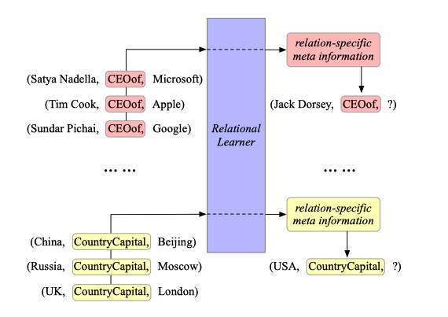
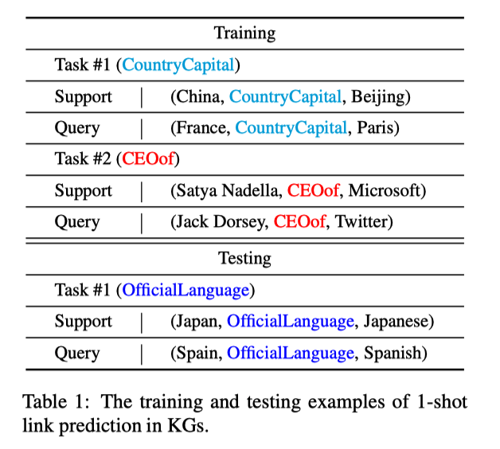
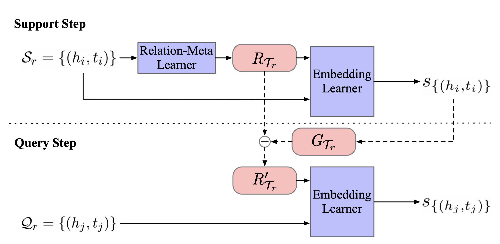
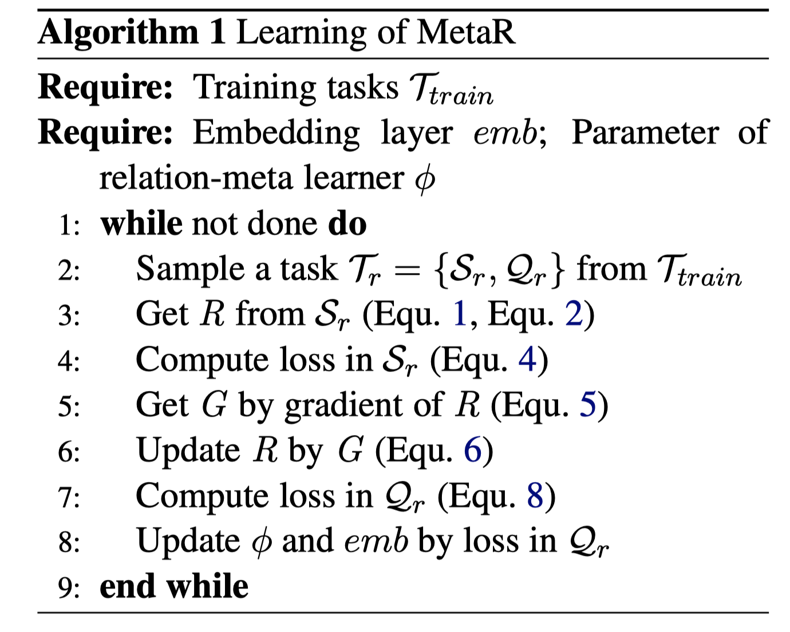
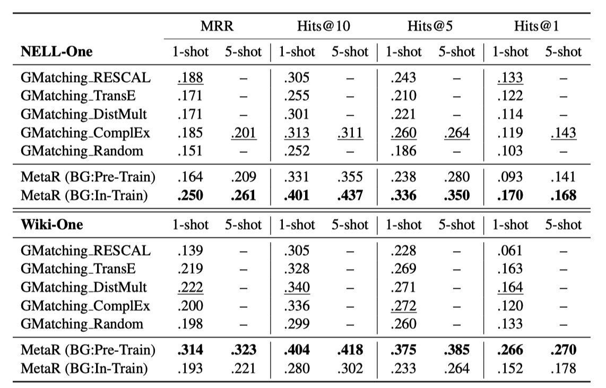

MetaR:通过元学习进行知识图谱小样本链路预测
本文最后更新于：1 小时前
问题：
当前很多知识图谱是不完整的——缺少三元组(h,r,t)的形式，本文针对用来补全知识图谱的小样本链路预测任务，其主要作用是根据已有的三元组预测新的三元组。在目前的知识图谱中，少样本问题广泛存在。在Wikidata中，约10%的关系涉及的三元组不超过10个。
论文中将不同关系（如CountryCapital, CEOof等）涉及的三元组实体链接预测视为一个单独的任务，在测试的过程中使用训练集中未出现的关系链接预测作为新的任务。


Relation-specific meta information
关系特定元信息是从小样本中转换到未完善的三元组中的最重要的信息，即在一个相同的任务中应该是相同以及共享的知识。
关系特定元信息可以从以下两个方面帮助我们进行链路预测：
- 从观察的存在的三元组中传输相同的关系信息到不完整的三元组中
- 仅仅通过观察少量样本就能加速一个任务的学习过程
同时，基于上述的两个特点，本文提出了两种关系特定元信息：关系元和梯度元。在本文提出的MetaR框架中，关系元是连接头实体和尾实体的关系的高级表示；梯度元则是在预测任务—将关系元传输到不完整的三元组关系之前，用来快速更新的关系元的梯度损失。（也就是说，在关系元信息传递到不完整的三元组的时候，已经利用梯度元将关系元更新成一个稳定的信息表示）
Meta-Learning
元学习的目标是为了对于小样本寻找一个快速学习的能力，并且将这种学习能力泛化到更多的概念中。这种学习的模式接近于人类的学习方式。它可以看作是寻找一个向量空间上的任务的基，学习任务的本质，我们并不是通过学习具体任务（例如统计学习）来学会新的任务，而是通过抓住这些任务的本质以促进新任务的学习。
主要贡献
提出了一个用来针对小样本链接预测的元关系学习MetaR框架(传统的嵌入式模型需要依靠大量的训练数据，这就限制了其在小样本链路预测任务上的应用)
我们强调了具体的元关系信息在小样本链接预测任务中的重要地位，并且提出了两种具体的关系元信息
本文提出的MetaR框架在小样本链接预测任务上达到了最高水平，除此之外我们还分析了影响MetaR框架表现的具体因素
任务制定
定义
知识图谱 $\mathcal{G}= { \mathcal{E,R,TP} }$，$\mathcal{E}$是实体集合，$\mathcal{R}$是关系集合，$\mathcal{TP={(h,r,t)\in E \times R \times E}}$是三元组集合。
小样本链路预测任务$\mathcal{T}$ 在一个知识图谱$\mathcal{G}$中，给定一个支持集$\mathcal{S_r={(h_i,t_i)\in E\times E \vert } $ $ \mathcal{(h_i,r,t_i)\in TP}}$ ，其中关系$\mathcal{r \in R}$，如果$\mathcal{|S_r|=K}$，那么预测和某个头节点$h_j$有着关系$r$的尾节点的任务就叫做K-样本连接预测预测，写作$r:(h_j,?)$。
通过上面的定义，一个小样本的链接预测任务通常定义在一个具体的关系上。在预测的过程中，通常有超过一个的三元组需要被预测。与支持集$\mathcal{S_r}$相对应的是，我们定义一系列的需要被预测三元组，称之为查询集$Q_r = { r : ( h_j , ? )}$。
MetaR结构

Relation-Meta Learner
作用主要是从提供的Support Set中提取关系元，这个学习机的结构是用一个简单的神经网络。

在任务$\mathcal{T_r}$中，学习机的输入是给定的Support Set里面的头尾实体对${(h_i,t_i)\in S_r}$，我们首次通过一个$L$层的神经网络提取出这些实体对的具体的关系元(specific relation meta)
$\large \mathrm{h}i\in \mathbb{R}^d,\mathrm{t}_i\in \mathbb{R}^d$，是头实体$h_i$和尾实体$t_i$分别在d维空间的嵌入.$\mathrm{W}^l$和$b^l$分别是神经网络$l$层的权重和偏移。$\sigma $函数使用了LeakyReLU激活函数，$\mathrm{x⊕y}$代表向量拼接，最后的到的$R{(h_i,t_i)}$代表了特定实体$h_i$和$t_i$的关系元。
有了很多实体对的特定关系元后，我们最后计算当前任务$\mathcal{Tr}$的最终关系元$R{\mathcal{T_r}}$。
Embedding Learner
$||\mathrm{x}||$代表向量的L2范式，这种评分函数的基本思想来源于TransE模型，其假设的是一个真实的三元组满足$\mathrm{h+r=t}$的基本假设。因此这个评分函数定义的是$\mathrm{h+r}$和$\LARGE \mathrm{t}$之间的距离。这个方式转换到我们的链接预测中，由于我们的任务中没有直接普遍的关系嵌入编码，我们使用关系元信息$R{\mathcal{T_r}}$来替代编码获得的关系$\mathrm{r}$，$R{\mathcal{T_r}}$可以视为任务$\mathcal{T_r}$的关系编码。
本文对每个三元组都进行了评分，并且设置了以下的合页损失函数：
其中$[x]+$表示的是样本x的positive part，$\gamma$是表示距离的超参数。$s{(h_i,t’_i)}$是相对于正例实体对$(h_i,t_i)\in \mathcal{S_r}$的反例实体对$(h_i,t’_i)$，即$(h_i,r,t’_i)\notin \mathcal{G}$
我们将基于$L(\mathcal{Sr})$的关系元$R{\mathcal{Tr}}$的梯度作为梯度元$G{\mathcal{T_r}}$:
并且通过以下函数更新关系元:
其中β为利用梯度元对关系元进行更新的步长因子，通过这个式子让模型在每个任务中精调。
当基于编码学习器来对查询集中的实体进行评分的时候，我们使用更新之后的关系元。在获取到更新之后的关系元$R’$之后，我们将其转移到查询集$\mathcal{Q}_r={(h_j,t_j)}$中，然后计算其评分和查询集(Query Set)的损失情况，其计算评分和计算损失的公式和支持集(Support Set)中一样。
使$L(\mathcal{Q}_r)$最小化就是我们这个训练的目标，我们通过这个参数去更新整个模型。
在训练中，我们的目的就是最小化$L$损失函数，他是各个任务中查询集损失函数的和。
实验结果

MRR（Mean reciprocal rank）是一个国际上通用的对搜索算法进行评价的机制，即第一个结果匹配，分数为1，第二个匹配分数为0.5，第n个匹配分数为1/n，如果没有匹配的句子分数为0。最终的分数为所有得分之和。Hits@N代表正项在链路预测可能性的top N个实体中的比例。
粗体的数字代表所有对比项中最好的结果，下划线数字代表GMatching中最好的结果。
本博客所有文章除特别声明外，均采用 CC BY-SA 4.0 协议 ，转载请注明出处！